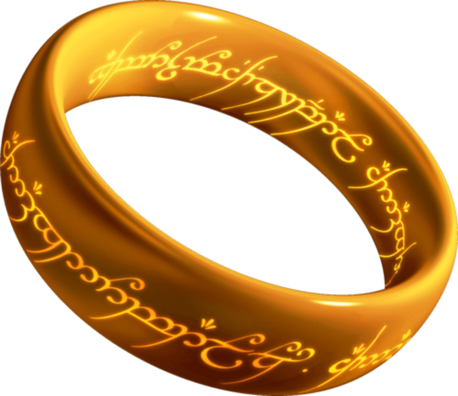

ВЛАСТЕЛИН КОЛЕЦ
Католог предметов

Кольцо всевластии
Магические Кольца были созданы Келебримбором и другими эльфами Эрегиона по наущению и с помощью Саурона. Даёт возможность подченять орков против их воли и других существ
кнопкаДоспехи Саурона

Прочный и удобный доспех,всегда спасет ваши жизнь от критического ранения.Примечание при одевание доспеха вами может завледеть сам саурон.
кнопка
Отзывы